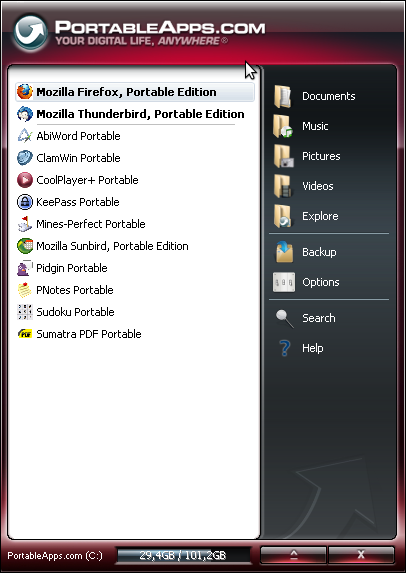

Aplicacions de propòsit general
Els ordinadors són eines configurables per definició. En primer lloc podem canviar el maquinari de què consten, però a més podem instal·lar-hi (en la major part dels casos) diferents sistemes operatius, o almenys versions d’aquests. Els sistemes operatius són per definició eines de programari que disposen d’una gran quantitat d’eines, tant d’administració com en alguns casos de propòsit general (per exemple les distribucions de Linux).
Definim aplicacions de propòsit general com aquelles que poden ser utilitzades per a més d’un propòsit.
Classificació de programari
Podem distingir els tipus d’aplicacions no incloses en el sistema operatiu en dues de bàsiques, segons la seva finalitat i utilitat. Una aplicació horitzontal es pot definir com aquella que es podrà utilitzar en tot tipus d’organitzacions o per usuaris individuals, com les eines ofimàtiques, el processat de textos o eines de comptabilitat. Aquesta definició coincideix amb la que hem vist per a les aplicacions de propòsit general.
D’altra banda, podem trobar també un tipus d’aplicacions que podem anomenar verticals, les quals compliran amb les especificacions necessàries per a una tasca molt concreta. Alguns exemples podrien ser els programes per gestionar els pacients en un dentista, o per reservar bitllets d’avió. Alguns cops aquest tipus de programari es podrà comprar a companyies especialitzades, o es podrà encarregar perquè alguna empresa de programació el faci a mida. La característica bàsica que els diferencia de les aplicacions horitzontals és que aquests programes no seran d’utilitat fora de l’àmbit per al qual han estat dissenyats.
Com que les aplicacions de tipus vertical poden ser dissenyades per donar resposta a necessitats molt específiques, ens interessa fer una classificació de les aplicacions de propòsit general, que s’utilitzen de manera molt estesa en tots els camps de la informàtica, sigui empresarial o tècnica. Les aplicacions més comunes en aquest camp són les que permeten fer tasques ofimàtiques, com ara processadors de text o fulls de càlcul, però n’hi ha moltes altres que van des dels programes de manipulació multimèdia fins a les eines de gestió de màquines virtuals.
Programari d'oficina i productivitat
Els paquets de programari són col·leccions de programes, en general de productivitat, que es distribueixen conjuntament i amb una interfície comuna.
Els ordinadors es van començar a utilitzar com a eines que facilitaven la realització de certes tasques de càlcul a velocitats molt elevades. Algunes de les primeres aplicacions comercials van ser aquelles que implicaven automatitzar els sistemes d’informació de les empreses, de manera que facilitaven la feina de tractament de les dades en aquells casos en què adquirien un gran volum (grans empreses, molts productes…).
| Windows | Linux | Descripció |
|---|---|---|
| Microsoft Office OpenOffice.org | OpenOffice, KOffice i Siag Office | Paquet ofimàtic |
| Word | OOWriter, AbiWord, KWord, LaTeX | Processament de textos |
| Notepad Wordpad TheGun EditPlus SciTE | KWrite, Kate, BlueFish, Leafpad, Gedit i Joe | Editors de text |
| Access dBase Foxpro Paradox | Kexi i OOBase | Base de dades |
| Excel Lotus123 QuattroPro | OOCalc Gnumeric KSpread | Full de càlcul |
| Visio | Kivio Dia OpenOffice.org OODraw | Dibuix de diagrames |
| PowerPoint | OOImpress KPresenter | Creació de presentacions |
| Microsoft Project Manager | MrProject Imendio Planner Kplato | Gestió de projectes |
| Outlook Thunderbird+Lightning Sunbird | Evolution Kontact BALSA Thunderbird+Lightning Sunbird | Gestors d’agenda i contactes |
| Alcohol 120% Discjuggler Easy CD Creator Nero Burning ROM | K3b XCDRoast Brasero | Gravador de CD |
| Quicken Microsoft Money TurboTax | GnuCash KMyMoney jGnash MoneyDance Grisbi PLCash CrossOver Office with Quicken lazy8ledger | Comptabilitat |
El programari de productivitat s’encarrega de facilitar la feina per aconseguir que el rendiment econòmic que es treu del treball dels empleats sigui més gran.
Dins d’aquesta classe de programari s’inclouen tot tipus de programes que permeten crear o editar documents de tota mena o fer càlculs, i també gestionar diferents tipus de fitxers i organitzar eficientment el vostre temps. La taula mostra una llista amb algunes de les aplicacions de productivitat existents, amb exemples per a entorns Windows i Linux.
Imatge, disseny i multimèdia
Els ordinadors actuals han esdevingut una poderosa eina per a l’edició de continguts multimèdia, gràcies a l’increment de prestacions que han experimentat en els darrers anys. Les taules que veiem a continuació resumeixen les tipologies més habituals d’aplicacions que podem trobar en el camp dels mitjans audiovisuals, tant pel que fa a la reproducció com a l’edició.
1) Eines de disseny i creació de continguts: es tracta de programes que permeten editar documents destinats a un suport paper o web. La taula mostra una llista en els entorns Windows i GNU/Linux. Poden ser documents estàtics o dinàmics, i poden constar de múltiples tipus de dades formant un tot.
| Windows | Linux | Descripció |
|---|---|---|
| Dreamweaver, NVU, KompoZer | OOWeb, NVU | Disseny web |
| Quark, Quark Express, Microsoft Publisher | Scribus, OpenOffice.org OODraw | Programari d’autoedició |
| Adobe Acrobat PDF Reader | Adobe Acrobat Reader, Xpdf Kpdf, Ghostview, Evince | Lectors PDF |
| Adobe Acrobat Distiller, PDFCreator | CUPS-PDF, OpenOffice.org, Kprint | Creació de documents PDF |
| Adobe Acrobat PDF Editor | pdftk, pdfedit, pdfjam | Edició de documents PDF |
| SilverFast | xSane, VueScan | Escaneig de documents |
| FinePrint | page-crunch, mpage, Kprinter psnup-PSutils, pdfnup-PDFjam | Impressió i reformatació de documents |
2) Eines multimèdia: aquest programari permet fer l’edició de fitxers multimèdia de tot tipus. La classificació inclou eines d’edició de mapa de bits, de gràfics vectorials i de documents d’àudio i vídeo en diversos formats, i també de creació de continguts en dues i tres dimensions. També s’inclouen els programes que permeten reproduir tots aquests arxius (taula).
| Windows | Linux | Descripció |
|---|---|---|
| Adobe Photoshop, Corel Photo-Paint GIMP, GIMPShop | GIMP, GIMPShop, Krita Pixel, LightZone | Editors d’imatges de mapa de bits |
| Corel Draw, Adobe Illustrator | Inkscape | Editors de gràfics vectorials |
| Irfanview, ACDSee | XnView, GQView Mirage, GThumb | Visors d’imatges |
| 3D Studio MAX, Blender, Maya | Blender, Maya, Softimage, K-3D | Programari de modelat 3D |
| Windows Media Player, PowerDVD | MPlayer, Xine, Totem Kaffeine, VLC | Reproductors de vídeo |
| SIA Smaart Live | BRP-PACU | Sonorització d’espais |
| Winamp, Sonique, iTunes, aTunes | amaroK, aTunes, XMMS BMP, Audacious, noatun RhythmBox, Xine, Banshee | Reproductors de música |
| Windows Movie Maker, Adobe Premiere Elements, Multiquence | Cinelerra, KDenlive, LiVES Kino, AviDemux | Editors de vídeo |
| Audacity, Cubase, CoolEdit, GoldWave | Ardour, Rosegarden, Audacity GNUsound, Beast | Eines d’edició d’àudio digital |
| Cakewalk | kmid, kmidi | Seqüenciadors musicals. |
| NoteWorthy Composer, MuseScore, LilyPond | MuseScore, LilyPond | Edició de partitures musicals |
| GuitarPro, TuxGuitar | TuxGuitar | Edició de tabulatures per a guitarra |
| Microsoft Paint, Kid Pix, Tux Paint | Tux Paint, KolourPaint | Editors d’imatges de mapa de bits bàsics |
| Videora | Thinliquidfilm | Conversors de formats de vídeo |
| TMPGEnc DVD Author, Roxio DVDit | Bombono DVD | Eines de creació de DVD |
Clients per a serveis d'Internet
La popularització de la xarxa Internet -així com de les xarxes corporatives- i el seu ús quotidià han fet que hagin aparegut multitud d’aplicacions que permeten accedir i utilitzar els serveis que ens ofereix la Xarxa. En la taula següent podem consultar les eines més utilitzades en aquest àmbit.
1) Eines de xarxa i Internet: les aplicacions en aquest punt s’utilitzen per a tota classe de tasques relacionades amb la comunicació utilitzant l’entorn de xarxa o Internet. La taula inclou navegadors d’Internet, clients de correu, clients de xarxes de compartició de fitxers o programari de telefonia IP, entre d’altres.
| Windows | Linux | Descripció |
|---|---|---|
| Microsoft Internet Explorer, Firefox, Netscape Opera, Lynx | Firefox, Galeon, Konqueror Netscape, Opera | Exploradors d’Internet per al World Wide Web. |
| Outlook Express, Outlook, Thunderbird, Pegasus, Lotus Notes | Kontact, Evolution, Thunderbird, Claws Mail Sylpheed | Clients de correu electrònic |
| ICQ, MSN Messenger, AIM (AOL Instant Messenger), Trillian, Pidgin | Pidgin, Kopete, aMSN, Gabber, Emesene (MSN), Centericq | Missatgeria instantània |
| Microsoft Netmeeting | Gnomemeeting | Clients de videoconferència |
| Microsoft HyperTerminal | minicom | Consola de connexió remota a sistemes |
| FileZilla FTP Client, WS FTP, Bullet Proof FTP, CuteFTP | FileZilla FTP Client, KFTP (KFTPGrabber), Kasablanca, FireFTP, Konqueror, KBear, CrossFTP, Nautilus | Clients FTP |
| mIRC | Konversation, Quassel, KVIrc, XChat, BitchX | Clients IRC |
| UltraVNC, TightVNC, RealVNC, Remote Desktop | TightVNC, RealVNC, rdesktop, FreeNX, x11vnc, Synergy, XDMCP, SSH | Compartició d’escriptori |
| Forte Free Agent, Thunderbird, Pan | Thunderbird, Pan, Sylpheed | Lectura de notícies |
| eMule | aMule | Clients de xarxes P2P ED2K |
| Azureus, utorrent | Azureus, Qtorrent, Ktorrent bittornado, Deluge, Transmission | Clients de xarxes P2P BitTorrent |
| Skype, Voipbuster | Skype, Linphone OPenwenGo, Ekiga | programari VoIP |
Altres aplicacions
Aplicacions portables
Una aplicació portàtil o portable és un programa informàtic que pot ser utilitzat en qualsevol ordinador amb el sistema operatiu per al qual està programat sense cap instal·lació prèvia, i no requereix la instal·lació prèvia de biblioteques ni la modificació del registre per funcionar.
La classificació dels tipus de programes no acaba aquí, sinó que es poden trobar eines de tot tipus per a cada idea que un autor imagini o un usuari reclami.
Els productors de programari i la comunitat de desenvolupament de codi lliure han creat tot tipus de programes que permeten ampliar la funcionalitat dels ordinadors, i els han convertit en allò que es pugui assolir mitjançant eines informàtiques i de maquinari.
Tot seguit trobareu resumides –sense voluntat de ser exhaustius–, les eines segons les tasques que fan, juntament amb la descripció d’alguns programes per a cada grup d’eines (taules 7-13).
1) Programes educatius: són aquells programes que tenen com a finalitat oferir nous coneixements o habilitats als seus usuaris, ja s’adrecin als usuaris en edat escolar o bé a tots els públics. En trobareu esmentats alguns a la taula. Hi ha casos que tenen també un vessant lúdic, mentre que altres programes només estan pensats per ajudar l’usuari a assolir el domini de la temàtica tractada.
| Windows | Linux | Descripció |
|---|---|---|
| Mecanografia AM, MecaMatic, TuxType | KTouch, TuxType | Pràctica d’habilitats mecanogràfiques |
| Maple, Mathematica | Maple, Mathematica, Maxima | Sistemes d’àlgebra per ordinador |
| Matlab | Matlab, Octave, SciLab | Entorns de programació matemàtica avançada |
| SPSS, Stata, EViews | R-project, Stata, PSPP, S-Plus | Anàlisi estadística |
| Verilog, PSpice, Micro-Cap | iverilog, Eagle, Geda | Disseny i simulació de components electrònics |
| Google Earth, NASA World Wind, Celestia, Stellarium | Google Earth, Celestia, Stellarium, Marble, Geody | Geografia i astronomia |
Cedega és una derivació propietària del Wine, dissenyada per executar jocs creats per a Microsoft Windows sota la plataforma GNU/Linux.
2) Programari d’oci: jocs i entreteniment: sota aquesta etiqueta podeu trobar tots els programes que es poden classificar com a jocs o programes de lleure i entreteniment. Es tracta d’un dels sectors del programari comercial amb més moviment. Es produeixen gran quantitat de jocs, sobretot per a Windows, però també per a altres sistemes operatius. A la taula en trobareu una mostra. Cal tenir en compte que hi ha també esforços per executar jocs creats per a Windows en altres sistemes.
| Windows | Linux | Descripció |
|---|---|---|
| Tetris | LTris, XWelltris Emacs + “Meta-X tetris”, Ksirtet | Puzle en dues dimensions |
| Jocs estàndard Windows | Kdegames Gnome-games | Jocs inclosos de sèrie amb el sistema operatiu |
| Mines | KMines Perlmines Dmines | Localització de les mines |
| Civilization | FreeCiv | Simulació de civilitzacions |
| Command&Conquer | FreeCNC | Jocs d’estratègia |
| Warcraft 2, Starcraft | FreeCraft | Videojoc de rol multijugador |
| Arkanoid, Zball | Lbreakout2 | Arcade trenca-totxos |
| jDoom-Doomsday, Zdoom, DOOM Legacy LxDOOM, PrBoom, EDGE Vavoom, Original Doom | jDoom-Doomsday, Zdoom, DOOM Legacy LxDOOM, PrBoom, EDGE Vavoom, Original Linux Doom | Aventures en entorn 3D |
| Worms | Nil | Joc d’intel·ligència de tipus puzle |
| MS Flight Simulator | FlightGear | Simulador de vol |
| Lemmings | Pingus | Joc d’estratègia en moviment |
| Need For Speed | Tux Racer, KartlingRace | Joc de carreres d’automòbils |
| ChessMaster, Chess Genius, Chess Crusade | Glchess, Xboard, Eboard | Simulador d’escacs |
Llenguatge de programació
És un llenguatge artificial destinat a expressar les operacions que ha de fer un ordinador, i això inclou tots els programes que hi executem.
3) Els IDE (integrated development environment) o entorns integrats de desenvolupament són programes que permeten crear i comprovar el funcionament de programes informàtics de tot tipus, tant en entorn de consola com gràfics. Normalment disposen d’editor de codi font, compilador o intèrpret, eines de muntatge i depurador. Alguns estan enfocats a l’ús amb un sol llenguatge de programació però n’hi ha que poden funcionar amb diversos tipus de codi. La taula en recull alguns.
| Windows | Linux |
|---|---|
| Microsoft Visual Studio NetBeans Eclipse | KDevelop SunStudio NetBeans Eclipse |
Molts entorns IDE són multiplataforma.
4) Programes de servidor: els ordinadors destinats a funcionar com a servidor habitualment utilitzen un sistema operatiu especialitzat, però fins i tot els equips domèstics poden instal·lar tot tipus d’aplicacions que permeten que un equip estàndard doni alguns dels serveis inicialment destinats als servidors, com els servidors web, FTP, els sistemes gestors de base de dades, i altres (taula).
| Windows | Linux | Descripció |
|---|---|---|
| IIS, Apache | Apache, iPlanet, thttpd, lighttpd, YAWS ZOPE | Servidors HTTP |
| Compartició de recursos Windows | Samba | Eines de compartició de carpetes i impressores |
| IIS, FileZilla FTP Client & Server | proftpd, vsftpd, pure-ftpd | Servidors FTP per compartir fitxers |
| NetLimiter | Trickle, Level 7 Filter ClarkConnect, Bandwidth Arbitrator MasterShaper | Gestió de l’ample de banda |
| Exchange | Citadel, Zimbra, Open-Xchange | Compartició d’agenda, contactes, documents, correu electrònic, etc. |
| Sharepoint | KnowledgeTree | Edició de documents col·laborativa |
| Oracle, SQL Server | MySQL, PostgreSQL | Sistemes gestors de bases de dades |
| Windows SharePoint Services, DotNetNuke, Zikula, Moodle | Zikula, Moodle Coppermine, DokuWiki | Gestors de continguts ASP/PHP |
El gestor de continguts
El CSM (content management system) és un programa que permet crear una estructura de suport per a la creació i l’administració de contingut, principalment en pàgines web, per part dels participants d’una manera simplificada. Per tal de funcionar requereixen la utilització d’un gestor de base de dades (SQL Server, MySQL, PostgreSQL) i de suport per a algun llenguatge com PHP o ASP. Algun dels gestors més utilitzats són el Zikula (pàgines web), el Moodle (aules virtuals), el Coppermine (galeries fotogràfiques) o el DokuWiki (edició col·laborativa de documents).
Eines de virtualització
La capacitat de processament dels ordinadors actuals permet que executin programes emuladors que fan possible gaudir de sistemes operatius aliens a la vostra màquina amb una disminució de rendiment inapreciable respecte a la màquina real.
Programari de "màquina virtual"
Aquest programari fou definit inicialment com a “duplicat eficient i aïllat d’una màquina física”. L’accepció del terme actualment inclou màquines virtuals que no tenen cap equivalència directa amb un maquinari real, com la màquina virtual Java.
Una màquina virtual o eina de virtualització és un programari d’emulació que permet executar el sistema operatiu i els programes corresponents a un altre maquinari com si fos un ordinador real.
Una característica essencial de les màquines virtuals és que els processos que executen estan limitats pels recursos proporcionats pel programari de la màquina virtual, és a dir, aquests processos no poden escapar d’aquest “ordinador virtual”.
Entre els usos domèstics més habituals destaquen:
- Executar sistemes operatius per “provar-los” com, per exemple, Linux a dins de Windows.
- Aprendre el funcionament d’altres sistemes operatius sense necessitat d’instal·lar-los en un ordinador real.
- Utilitzar programari corresponent a altres sistemes operatius sense necessitat de tenir-hi un equip dedicat.
El codi font de l’especificació de la màquina virtual Java és obert, malgrat que és propietat de Sun Microsystems.
En tots aquest casos us estalvieu els possibles problemes que us podria donar el fet d’haver d’instal·lar un altre sistema operatiu en un equip que ja es troba en funcionament, en què s’haurien de fer particions, modificar el gestor d’arrencada, i altres modificacions que podrien donar problemes en l’arrencada del sistema operatiu “principal”.
Algunes de les eines més utilitzades són:
- Les màquines virtuals permeten avaluar múltiples sistemes operatius
- Sun xVM VirtualBox: instal·lable a la majoria de sistemes operatius. Disposa d’una versió oberta i d’altres comercials.
- VMWare Workstation: també és multiplataforma. La versió d’avaluació té una duració d’un mes. VMWare disposa d’altres programes de virtualització com VMWare Server. L’eina VMWare Player es pot baixar lliurement.
- QEmu: funciona en tot tipus de sistemes, incloent-hi els basats en BSD o BeOS. La llicència és de programari obert GPL.
- Parallels Workstation: sorgida de l’entorn Mac, en què es disposa de Parallels Desktop. És un programari comercial i funciona en Windows i GNU/Linux.
- Microsot Virtual PC: és capaç de virtualitzar tota classe de sistemes operatius, però només funciona en sistemes Windows. És de codi tancat però es pot baixar lliurement.
- Java virtual machine (JVM): la màquina virtual de Java no emula cap sistema de maquinari, sinó que és capaç d’executar binaris compilats expressament per a aquest sistema virtual. D’aquesta manera els programes Java són utilitzables en qualsevol maquinari que disposi d’una màquina virtual Java, i s’aconsegueixen programes multiplataforma sense haver-ne de modificar el codi font.
Instal·lació de programari d'aplicació
Encara que hi ha una tendència actual a accedir a les aplicacions per mitjà d’Internet, de manera que només calgui un navegador web, en la majoria dels casos els programes i les dades continuen residint en el mateix ordinador en què es treballa, raó per la qual sovint resulta necessari instal·lar programes a l’ordinador.
Instal·lar un programa és fer els passos necessaris perquè el programa estigui disponible de manera permanent a l’ordinador.
Paquets o instal·ladors
En la major part de casos el programari instal·lable es trobarà en unitats autocontingudes anomenades paquets o instal·ladors, que ens permetran fer una instal·lació a l’ordinador destí.
Els punts més importants en el procés d’instal·lació d’un programa es poden resumir en la font o origen del programari, el tipus d’empaquetat en què l’aconseguim, i el procés d’instal·lació que dependrà dels dos conceptes anteriors, però també del sistema operatiu que s’estigui utilitzant.
De vegades, per poder instal·lar un programa és necessari instal·lar prèviament altres programes anomenats biblioteques. El primer pas consisteix a aconseguir els instal·ladors i les biblioteques necessàries, cosa que es pot fer per mitjà d’Internet o per mitjans de tipus portàtil com ara el CD o el DVD. El mètode d’instal·lació tindrà variacions depenent del sistema operatiu utilitzat i del programa concret que s’instal·li.
Instal·lació en Windows
Windows és un sistema operatiu de propietat (és a dir, no lliure) que inclou algunes aplicacions de propòsit general (Internet Explorer, WordPad, Paint, Media Player, etc.), però la immensa majoria d’aplicacions han estat instal·lades a posteriori. En la majoria dels casos, aquests passos es fan automàticament mitjançant instal·ladors que normalment es troben empaquetats com a fitxers executables.
A l’hora d’aconseguir programari per a un sistema Windows, disposem de moltes fonts de programari que van des de les botigues físiques d’informàtica fins a la utilització de la xarxa Internet. Els orígens més habituals per al programari instal·lable es poden resumir en els següents:
- Suport òptic: Programes emmagatzemats en discos CD, DVD, o BluRay, en produccions amb molt contingut multimèdia.
- Suport llapis USB: Alguns programes es poden adquirir en format llapis USB, normalment quan es tracta d’eines d’administració de sistema.
- Pàgina del fabricant: Molts productors de programari ofereixen la possibilitat de descarregar versions de prova o comercials en els seus portals.
- Pàgines de recopilació de programari: Es tracta de webs especialitzades, com Sourceforge (programari lliure), Tucows o Softonic (programes amb diverses llicències), on es pot accedir a tot tipus de programari, classificat també per la seva utilitat.
Desinstal·lació de programes
Si per qualsevol motiu ja no cal tornar a utilitzar més un programa, Windows permet també desinstal·lar programes des de l’aplicació Afegir-Treure programes del Tauler de Control (“Programes i característiques”, a partir de Windows Vista).
L’empaquetat del programari en un sistema Windows consta d’un conjunt de fitxers executables, de configuració i llibreries que poden venir comprimits en un fitxer (d’extensió zip o cab) o també es poden trobar com un sol fitxer executable. Alguns dels noms més habituals d’aquests són setup.exe o install.msi, on en el primer cas es tracta d’un executable i en el segon un fitxer de tipus microsoft installer.
Wine
Wine és una aplicació informàtica de codi obert, l’objectiu de la qual és permetre que els programes escrits per al sistema Windows puguin funcionar en sistemes de tipus UNIX.
El procés d’instal·lació d’un programa en un sistema Windows, (vegeu un exemple en la figura) comporta una sèrie de passos senzills que dependran del tipus d’instal·lador que incorpori el programa. Si aquest incorpora manuals o algun fitxer readme, hi podem trobar les instruccions concretes per a aquest programari:
- En primer lloc cal assegurar-se que l’ordinador on es vol instal·lar el programa compleixi els requeriments mínims de maquinari i programari indicats pel fabricant.
- En molts casos és aconsellable tancar totes les altres aplicacions que es troben en funcionament per evitar problemes durant la instal·lació.
- Si el suport on tenim el programari instal·lable disposa de la característica anomenada autorun o execució automàtica, en el moment d’insertar el mitjà s’engegarà sense cap acció per part de l’usuari el programa d’instal·lació.
- En el cas que el suport utilitzat no disposi d’execució automàtica, com per exemple si l’hem descarregat d’Internet, caldrà seguir els passos següents:
- Obrir un explorador i navegar fins al dispositiu o carpeta on es trobi el programa instal·lable.
- Localitzar en aquesta carpeta un fitxer anomenat setup o install. Fer doble clic en aquest fitxer engegarà el procés d’instal·lació que en la major part dels casos disposarà d’un assistent que simplifica en gran manera la instal·lació guiant l’usuari en cada una de les etapes de la instal·lació.
- En alguns casos, un cop feta la instal·lació, haurem de reiniciar l’equip per tal que els canvis s’apliquin a la configuració del sistema operatiu.
- També alguns programes que puguin necessitar ens demanaran durant la instal·lació o al final d’aquesta que instal·lem aquestes eines complementàries. En el cas de no fer-ho no podrem utilitzar el programa fins que ho hàgim fet totes les tasques requerides.
Instal·lació en GNU/Linux
En sistemes GNU/Linux la instal·lació i desinstal·lació de programari es troba centralitzada en els gestors de paquets, que poden ser de tipus consola o amb interfície gràfica.
En un ordinador Mac, els programes instal·lables es troben en format dmg o sit.
Quant a les fonts de programari en GNU/Linux, encara que en alguns casos podem trobar programes en suport físic, aquesta possibilitat és molt més baixa que en altres sistemes propietaris com Windows o Mac OSX.
Si que és possible trobar tot tipus de programari en pàgines de productors de programari, i també en webs de recopilació, que en molts casos ens ofereixen les versions d’un programa per a diversos sistemes operatius si aquestes existeixen.
D’altra banda, el lloc natural per aconseguir programari en un ordinador amb GNU/Linux són els anomenats repositoris.
Un repositori de programari és un espai d’emmagatzematge des del qual es poden descarregar i instal·lar paquets de programari en un ordinador.
Molts productors de programari mantenen servidors a Internet per donar accés als seus programes, sigui de manera gratuïta o de pagament. Els repositoris poden ser per a programes individuals, per a col·leccions de programes o fins i tot per a un sistema operatiu complet.
Un dels majors avantatges dels repositoris de programari és que es tracta d’espais que es mantenen nets de malware o virus, de manera que els sistemes que els utilitzen com a únic mitjà per actualitzar el seu programari poden arribar a ni tan sols necessitar de programari antivirus o antimalware.
Les distribucions de GNU/Linux estan construïdes al voltant de l’ús de repositoris per a la seva actualització i instal·lació de nou programari. Concretament, els gestors de paquets de Linux utilizen els repositoris per mantenir el sistema al dia en tot moment.
El tipus empaquetat de programari en sistemes GNU/Linux s’anomenen pròpiament paquets (packages). Els dos tipus de paquet més utilitzats són RPM i DEB:
- El format de paquet DEB es gestiona amb l’eina apt, que permet algunes característiques com la resolució de dependències automàtica o la signatura de paquets per seguretat. Els paquest DEB (o Debian) s’utilitzen a més de en el sistema original en altres com Ubuntu, Knoppix o altres.
- Els paquets RPM, també molt utilitzats, es poden gestionar amb eines com yum, i s’utilitzen a més de en Red Hat en altres sistemes com Fedora, Mandriva o SUSE.
Existeix una gamma molt àmplia d’eines que permeten gestionar els paquets en un sistema Linux. La més utilitzada en sistemes derivats de Debian i que utilitzen paquets DEB (com Ubuntu) és apt-get. La sintaxi per instal·lar un programa és tan senzilla com fer apt-get install packagename amb un usuari administrador. En sistemes derivats de RedHat, com pot ser open Fedora Core i que utilitzen paquets RPM, l’eina més comuna és yum. La sintaxi per instal·lar un paquet també es limita a executar yum install packagename des d’un administrador.
Existeixen múliples gestors de paquets a més d’apt o yum, com poden ser pacman en Arch Linux o equo en Sabayon Linux.
Les eines gràfiques d’instal·lació simplifiquen encara més el procés d’instal·lació i gestió de repositoris. Aquestes eines, com Synaptic o el Centre de Programari a Ubuntu (vegeu la figura), i també YAST en SUSE Linux, permeten instal·lar programes amb uns pocs clics de ratolí, aconseguint així sistemes operatius més amables per a l’usuari final sense coneixements tècnics.
Encara que és possible compilar tots els programes de codi obert, la majoria els podrem trobar precompilats per al nostre sistema.
D’altra banda, la filosofia de GNU/Linux, segons la qual hem de tenir accés al codi font del programari, per tal que en puguem fer les modificacions que vulguem, fa que en alguns casos ens trobem amb programes que no es troben compilats en paquets executables, sinó que el propi usuari els ha de compilar per tal que funcionin al seu sistema. Amb la instal·lació de programari compilant el codi font s’aconsegueix una major adapatació al maquinari i sistema destí, però a canvi el procés d’instal·lació resulta una mica més obscur per a usuaris no experimentats.
Si hem descarregat el programa en format comprimit tar.gz o tar.bz2, el procés més habitual és el següent, des d’usuari root:
Ordres per instal·lar un programa des de codi font.
# tar xvzf nomPaquet.tar.gz (o tar xvjf nomPaquet.tar.bz2)
# cd package
# ./configure
# make
# make install
# make clean
Els passos inclouen les operacions següents:
- Descomprimir el codi font i accedir a la carpeta descomprimida.
- El guió configure comprova el sistema i assigna valors a les variables de sistema, que utilitza per generar un fitxer Makefile.
- L’ordre make compila el fitxer binari (executable) a partir del codi font.
- Amb l’ordre make install es fa el procés d’instal·lació per se a partir de l’executable recentment generat.
- Amb make clean es netegen tots els fitxers temporals creats durant el procés de compilació.
- En cas de voler desinstal·lar el programa, l’ordre seria make uninstall, des de la carpeta on teníem el fitxer Makefile anterior.
Aplicacions portables
Encara que la major part d’aplicacions requireixen d’algun tipus de procés d’instal·lació per ser utilitzades en un ordinador determinat, aquesta condició no és sempre necessària, ja que depenent del disseny del programari, aquest pot ser autocontingut i no necessitar dependències en llibreries del sistema per funcionar.
Una aplicació portable és un programa d’ordinador dissenyat per funcionar sense necessitat d’estar instal·lat en un sistema operatiu.
Aquest tipus d’aplicacions habitualment s’emmagatzemen en mitjans extraïbles com CD, dispositius USB (discos o memòries) i també fins i tot discos flexibles. En aquests es disposarà tant dels executables com de la informació de configuració del programa.
Depenent del sistema operatiu utilitzat, la portabilitat d’aplicacions és més o menys difícil d’implementar.
Les aplicacions portables es poden executar en qualsevol sistema amb què siguin compatibles, però normalment requeriran un sistema operatiu concret. Per exemple, moltes aplicacions portables necessiten funcionar en un sistema amb Windows XP o superior, però també podrien necessitar una determinada distribució de Linux, una versió d’AmigaOS, etc.
Aplicacions portables en Windows
Al contrari de les aplicacions convencionals, les aplicacions portables en Windows no deixen els seus fitxers i configuracions en l’equip on s’executen. Per tant, no escriuen les seves dades al registre de Windows o emmagatzemen els fitxers de configuració (per exemple .ini) al perfil de l’usuari. En lloc d’això, mantenen totes les seves configuracinons al directori on es troba el programa.
A més d’això, donat que en canviar d’ordinador canviaran les rutes d’accés al programa (també la unitat), el funcionament de l’aplicació s’ha de basar en l’ús de rutes relatives, cosa que no es dóna gaire. Una solució habitual per a aquest problema és la utilització de programes lençadora, que copien els fitxers i configuracions temporalment a l’ordinador utilitzat i els retornen al directori del programa en tancar-lo.
- 
- PortableApps és un dels gestors d'aplicacions portàtils més utilitzats en Windows.
Un altre mètode per a la portabilitat en Windows és la utilització de virtualització d’aplicacions. En aquest cas l’aplicació s’executa a sobre d’una capa de programari anomenada llençadora que intercepta els seus fitxers i crides al sistema de manera transparent, i les redirecciona de manera que pugui funcionar des de qualsevol ubicació. Així l’aplicació no s’ha de modificar però pot funcionar de manera portable.
Aplicacions portables en derivats de UNIX
En el cas d’un sistema de tipus UNIX o GNU/Linux, normalment és més senzill aconseguir que les aplicacions siguin portables, ja que els fitxers de configuració de l’usuari que executa les apliacions normalment uilitzaran directoris no limitats a l’administrador o root, com per exemple el /home, i faran ús de la variable HOME. Això és en contraposició a la manera tradicional com funcionaven els sistemes Windows, on la instal·lació requeria normalment de privilegis d’administrador i per tant es limitava la capacitat de convertir les aplicacions en portables.
Altres sistemes d’aplicacions portables en GNU/Linux són Autopackage, RUNZ o Zero Install.
Hi ha paquets de programari que no requereixen drets d’administració per a la seva execució. A més, algunes distribucions de GNU/Linux permeten instal·lar suport per a aplicacions portables, com l’ofert pel projecte RUNZ, que actualment funciona en els sistemes Ubuntu i SuperOS.
A les adreces d’interès del mòdul podeu trobar l’adreça del projecte RUNZ, on podem descarregar el framework necessari i trobar algunes aplicacions en aquest format.
En els Annexos del material web del mòdul podeu trobar un llistat actualitzat de programari portable.
Per executar una aplicació en format portable en un sistema Ubuntu hem de fer alguns passos:
- Instal·lar el RUNZ framework, que podem descarregar d’Internet.
- Descarregar aplicacions en el format portable.
- Comprovar que no requereixen instal·lació ni executar-se amb un usuari root.
Realització d’inventaris
El fet de disposar d’un llistat actualitzat dels programes disponibles en un ordinador ha de permetre una millor utilització dels recursos, ja que en el cas de programes no utilitzats es podrà procedir a la seva desinstal·lació. Amb això s’aconsegueix alliberar recursos de l’equip hoste, tant disc dur com en algun cas memòria RAM si el programa utilitza algun programa resident en memòria. També pot comportar una millora econòmica si no renovem la llicència en programes no utilitzats. D’altra banda, també podem detectar carències en algun tipus de programari que no es trobi instal·lat malgrat la seva possible necessitat.
La realització d’inventaris del programari instal·lat en un equip és una eina organitzativa, el primer objectiu de la qual és mantenir una llista actualitzada dels programes de l’ordinador.
En l’entorn empresarial el manteniment d’un inventari de programari actualitzat encara és més crític, ja que es disposa de gran quantitat de programes amb les seves llicències i cal tenir un control adequat de tots els recursos del sistema, no solament dels de maquinari, com equips, eines informàtiques, dispositius de xarxa, etc.
Els sistemes operatius actuals disposen d’eines admnistratives que ens permeten disposar de la llista de programari instal·lat de manera senzilla, sempre que estiguem parlant de les versions amb interfície gràfica dels sistemes operatius.
El sistema operatiu Microsoft Windows disposa de l’eina “Programes i característiques” (“Afegeix o suprimeix programes fins a Windows XP), que és accessible des del Tauler de Control, i que ens dóna accés a la llista de programes instal·lats en un ordinador. Podem accedir al seu programa d’instal·lació desinstal·lació, conèixer l’espai que ocupa en disc, i fins i tot saber si el programa s’utilitza freqüentment o no (figura).
Amb l’ordre dpkg -l podem llistar els paquets DEB instal·lats en un sistema derivat de Debian.
Quant als sistemes operatius GNU/Linux, podem trobar diverses eines, des de les de consola, com la utilització de l’ordre dpkg fins a eines amb interfície gràfica. Des de la versió 9.10 d’Ubuntu es pot utilitzar el Centre de programari, que dóna accés, a més de a la instal·lació de nous programes, al llistat dels que es troben instal·lats en el sistema, amb informació detallada i fins i tot la possibilitat de desinstal·lar-lo de manera senzilla (vegeu la figura).
Consulteu l’apartat “Aplicacions de propòsit general” per conèixer amb més profunditat els tipus de llicència de programari.
Sigui quina sigui l’eina que utilitzem per recollir la informació en l’inventari, podem resumir els paràmetres més importants que ens interessen en els següents, que recollirem en una taula:
- Nom del programa: Nom sencer, traduït o no.
- Versió: La que es trobi instal·lada en el sistema. Sol tractarse d’un codi alfanumèric. És interessant saber si disposem de la versió més nova del programa.
- Desenvolupador: Programador, empresa o organització que s’encarrega de fer i mantenir el programa.
- Llicència del programa: indicació per saber si és una llicència comercial o de codi obert, validesa temporal de la llicència, número de sèrie si escau, etc.
- Espai en disc dur: Espai utilitzat pel programa. La memòria RAM utilitzada seria també una dada a tenir en compte, que hauríem de consultar amb el programa en execució.
- Altres: Qualsevol observació sobre el funcionament o problemes en la utilització del programa. Això podria portar a descartar-lo en favor d’un altre o a dur a terme millores en el sistema de manera que el rendiment fos més adequat.
En la taula podeu consultar un exemple d’inventari en un ordinador domèstic. La taula no inclou alguna de les dades comentades, com el número de sèrie, ja que en aquest cas tot el programari llistat és de codi obert de freeware.
| Nom | Versió | Llicència | Desenvolupador | Espai ocupat | Observacions |
|---|---|---|---|---|---|
| Open Office Suite | 3.2.1 | The Document Foundation | GNU LGPL Version 3 | 386 MB | Possible substituir per Libre Office |
| Adobe Flash Player | 10.1.102.64 | Freeware | Adobe Systems | 6 MB | Entorn d’execució i complement de navegador |
| Adobe Acrobat | 9.4.0 | Freeware | Adobe Systems | 232 MB | Versió en català |
| avast Free! antivirus | 6.0.1091 | Comercial | AVAST Software | 136 MB | Registre gratuït per 12 mesos |
| CPU-Z | 1.56 | Freeware | CPUID | 3,08 MB | Versió no actualitzada |
| Dev-C++ | 5 beta 9 | GNU General Public License | Bloodsheed Software | 61 MB | Avaluar IDE Eclipse |
| Dia | 0.97 | GPL | Alexander Larsson - Comunitat GNOME | 65 MB | Afegir InkScape |
| Filezilla Client | 3.4.0 | GNU General Public License v2 | Tim Kosse | 17 MB | Cal configurar llocs i usuaris. |
La realització d’inventaris pot comportar la generació de qualsevol tipus de documentació que permeti un accés fàcil a la informació recollida, sigui amb documents de full de càlcul, pàgines html o més concretament emmagatzemament de la informació en wikis online.
En el subapartat “Inventari i documentació del sistema” d’aquest mòdul podeu trobar informació sobre eines automatitzades d’inventari de maquinari i programari, utilitzades sobretot en entorn de xarxa.
Les llicències de programari
Tot el programari que utilitzem en el nostre dia a dia ha estat fet per alguna persona o grup de persones. Aquests programadors han pogut dur a terme l’eina en qüestió per tal de donar-la a la comunitat, però també han pogut fer-la amb la intenció de vendre-la o deixar-la sota algun tipus de contracte. Les llicències de programari cobreixen tots els casos i matisos que es poden donar en aquesta situació tan comú.
Una llicència de programari és un instrument legal que controla la utilització o redistribució del programari.
Les llicències més habituals permeten a l’usuari utilitzar una o més còpies del programari sempre que compleixi les condicions imposades pel creador o comercialitzador d’aquell. En el cas contrari, es podria incórrer en una infracció de la llicència (copyright) i això es perseguible per les lleis vigents.
Les llicències existents es poden generalment classificar en les següents:
- Llicències propietàries o comercials, que essencialment comporten un contracte de venda o lloguer sense drets de modificació.
- Llicènciès gratuïtes i de codi obert, que inclouen la possibilitat d’utilitzar gratuïtament el programari i que generalment permeten la inspecció i modificació del codi font.
Algunes llicències gratuïtes, com la GNU, permeten que les modificacions d’un programari també puguin ser venudes comercialment.
Així, en funció de la llicència d’ús que els acompanyi, hi ha dues classes de programari que es pot instal·lar en un equip: el programari comercial i el programari de codi obert.
Programari comercial o propietari
El programari comercial, privatiu o propietari està subjecte a una llicència comercial, segons la qual cal pagar per utilitzar el programari que, a més, no es pot modificar sense el permís del fabricant.
La clau per entendre aquest tipus de llicència és el fet que, encara que l’usuari adquireix el dret d’utilitzar una o més còpies d’un programari, sota les seves condicions d’ús, el programa segueix essent propietat del fabricant o distribuidor, de manera que l’usuari no pot revendre, modificar o fer un ús no previst en les condicions, sense permís exprés del propietari. A més l’usuari ha d’acceptar obligatòriament les condicions de la llicència per poder utilitzar el programari.
Alguns dels drets que es reserva el propietari del programari es poden resumir en:
- Controla les condicions d’ús: còpies, utilització del programa, etc.
- Habitualment no permet la inspecció o modificació del codi font.
- En controla la redistribució.
- També té drets sobre la interoperabilitat del programari amb altres, és a dir, pot utilitzar formats de fitxers propietaris.
Una de les maneres que utilizen els fabricants de programari per evitar la còpia lliure dels seus programes és la inclusió de proteccions de còpia.
La protecció de còpia és una mesura tècnica dissenyada per tal d’impedir o almenys dificultar la duplicació d’informació, en aquest cas d’un programa informàtic.
De vegades les proteccions de còpia poden dificultar també la còpia privada legal.
Els mètodes anticòpia s’utilitzen per protegir les còpies comprades per un usuari d’alguna eina o programa en front a la seva possible duplicació. S’ha de tenir en compte que malgrat les proteccions, aquestes no són totalment efectives i habitualment existeixen mètodes per saltar-se-les. Alguns dels mètodes utilitzats quant al programari són:
Consulteu als Annexos de la unitat la pàgina on es poden descarregar les condicions de llicència de les aplicacions de Microsoft, tant sistemes operatius com de propòsit general.
- Utilitzar números de sèrie, que han de ser únics per a cada usuari.
- Activació del programari, a través d’Internet o per altres mitjans.
- Necessitat d’una motxilla (dongle) per tal d’executar la còpia del programa.
Un exemple molt estès de programari amb llicència comercial és el sistema operatiu Microsoft Windows en les seves diverses variants. La llicència d’aquest programari és molt extensa i conté la llista d’activitats restringides per a l’usuari, com la enginyeria inversa del programa, l’ús simultani del programa per múltiples usuaris o la publicació de proves de rendiment o benchmarks.
L'enginyeria inversa
Aquesta enginyeria consisteix a esbrinar el funcionament d’algun sistema amb la intenció de fer-ne un altre que dugui a terme la mateixa tasca sense utilitzar l’original.
Altres exemples de programes molt utilitzats que són de tipus privatiu són el reproductor multimèdia Apple iTunes, l’eina d’informació geogràfica Google Earth, el sistema operatiu Mac OS X, el gestor d’arxius WinRAR o algunes versions de UNIX.
Hi ha altres casuístiques en les licències propietàries, que podem resumir en els casos següents:
- Existeixen programes que disposen de llicències “mixtes” ja que part del seu codi funciona sota la llicència comercial però altres parts són de codi obert. En són alguns exemples el servidor DNS Bind, el gestor de correu Sendmail, el servei X Window System o el DHCP.
- Alguns programes funcionen sota dues llicències simultàniament, depenent de l’ús que se n’hagi de fer. Per exemple, el gestor de base de dades MySQL es troba disponible sota termes propietaris per a ús comercial i sota codi obert per a ús particular.
- El programari privatiu que es pot utilitzar de manera gratuïta s’anomena freeware.
- El programari que ja no es suporta ni es ven per part d’una empresa s’anomena abandonware.
Programari lliure o de codi obert
El programari de codi obert o lliure es caracteritza perquè el codi font i altres drets es troben sota una llicència que permet a l’usuari final utilitzar, canviar i modificar el programari, i també distribuir el resultats de les seves modificacions.
El programari lliure sovint es desenvolupa de manera pública i col·laborativa, gràcies a les facilitats de comunicació que ofereix Internet.
De manera contrària al programari comercial, l’acceptació de la llicència d’ús no és necessària per part de l’usuari per tal de poder utilitzar-lo. Aquesta sí que s’haurà de complir, però, si es vol modificar o distribuir el programari.
- Logo del projecte GNU, que té la seva pròpia llicència d'ús amb el mateix nom.
Les llicències de codi obert es poden dividir en dues grans categories: aquelles que tenen la intenció de preservar la característica oberta del programari (copyleft), i les que es proposen donar tot tipus de llibertats d’útilització als usuaris del programa (permissive).
- Un exemple de llicència copyleft és la GPL, que està pensada per donar a l’usuari permís de redistribució, enginyeria inversa i modificació del codi sota els termes de la llicència. Per exemple, les modificacions que es facin s’han de llicenciar sota el mateix tipus de condicions que el codi original, de manera que siguin disponibles per a altres usuaris que vulguin utilitzar-les.
- Quant a exemples de llicèncis de tipus permissiu podem comentar per exemple les BSD o la del MIT, que bàsicament garanteixen a l’usuari fer tot allò que vulgui amb el codi font en qüestió, fins i tot la possibilitat d’utilitzar el codi com a part d’un programari de codi i llicència propietària.
Un dels exemples més utlitzats de programari amb llicència de codi obert és el sistema operatiu GNU/Linux, basat en la combinació del nucli Linux amb les eines GNU, que a dia d’avui inclou una ingent quantitat de programari de codi obert, com els escriptoris Gnome o KDE, tot tipus d’eines ofimàtiques, i tota una diversitat de programari.
Altres exemples de programari de codi obert, de entre els molts que podem trobar són paquets o suites ofimàtiques com Open Office i Libre Office, l’editor de gràfics The Gimp, navegadors d’Internet com Mozilla Firefox i Google Chrome, o el reproductor de música Rythmbox.
La pirateria digital
La generalització de les eines d’intercanvi d’arxius (P2P) han comportat un canvi en la mentalitat de bona part de la població, que considera que no és necessari pagar pels programes informàtics o les produccions audiovisuals, encara que aquests siguin de llicència comercial. Una causa d’aquest comportament és el fet que es poden trobar i descarregar fàcilment a Internet, amb les proteccions de còpia trencades perquè es puguin utilitzar encara que no se n’hagin adquirit els drets.
- La pirateria digital es troba molt estesa a causa de la popularització de la xarxa Internet.
Aquestes còpies no són legals en la majoria de països, encara que en alguns s’admeten fer copies de material propi per a ús privat. El fet de la dubtosa legalitat d’aquestes còpies va portar a la utilització del terme pirateria com una metàfora del robatori de la propietat intelectual, tal com feien els antics pirates en les seves incursions.
La pirateria digital es pot dividir bàsicament en la còpia o distribució il·legal de programari informàtic i de produccions audiovisuals. En el cas que ens ocupa, alguns països tenen una taxa molt alta d’utilització de material “pirata” en front a l’adquisició de llicències legals.
Als Annexos del mòdul podeu trobar un article del MIT (Massachussets Institute of Technology sobre la pirateria informàtica al mòn.
La pirateria de programari es refereix a l’ús de diversos mitjans informàtics com Internet per copiar o distribuir il·legalment programari no autoritzat.
La justificació més estesa per poder fer aquesta distribució de programari fora dels marges legals és que es tracta de còpies privades, que en molts països són legals, però el resultat secundari és que els programes arriben a les mans de molta més gent que no disposa de llicència.
Distribució en streaming
També hi ha mètodes de distribució multimèdia amb diferents llicències, basats en la distribució en línia mitjançant streaming. Algun exemple pot ser Spotify (àudio), Voddler (vídeo) o iTunes (multimèdia).
La legislació sobre aquest tema encara no s’ha estabilitzat, i per tant la descàrrega d’aplicacions o produccions multimèdia per a ús domèstic encara no es persegueix legalment de manera generalitzada, si no és que se’n vol treure benefici econòmic. Però en tot cas el fenomen està portant a un canvi de paradigma en el funcionament de la distribució i comercialització de productes digitals.
En el cas del programari ha donat ales al moviment del programari lliure, que utilitza altres mètodes per resultar rendible. En el món audiovisual les grans productores audiovisuals es resisteixen a abandonar el seu model de negoci basat en la venda de suports físics, però cada cop més es troba la possibilitat de llogar o comprar productes audiovisuals directament a Internet i a preus més baixos.